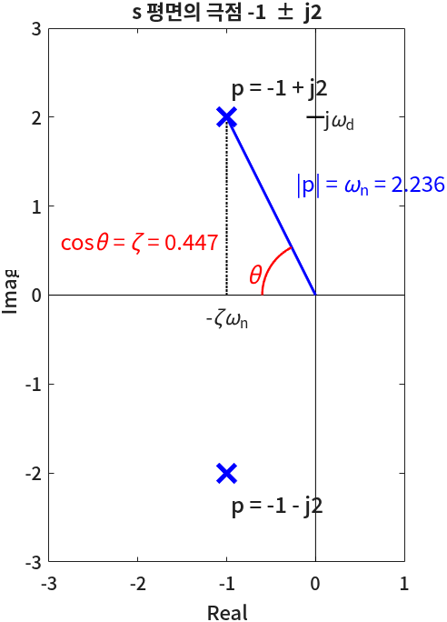
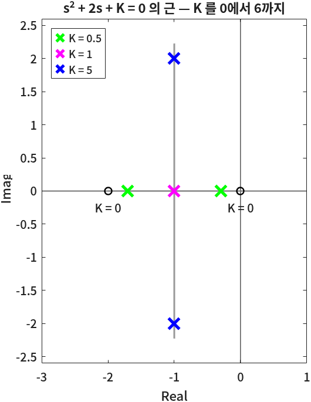

기본 연산 · 변수 · 행렬
- MATLAB에서
*와.*는 무엇이 다른가? 왜 둘이 따로 있나? - 행렬의 한 원소, 한 행, 여러 열을 어떻게 골라내나?
- 전달함수의 분모 \(s^2 + 3s + 2\)를 MATLAB은 어떤 모양으로 들고 있나?
- 특성방정식의 근을 구하면 그 숫자에서 제동비와 고유주파수를 어떻게 읽나?
- 계산 결과를 「극점: -1.0000 + j2.0000」처럼 원하는 모양으로 찍으려면?
1회에서 MATLAB을 깔고 명령 창에 몇 줄 쳐 보았다. 오늘은 그 명령 창을 계산기로, 그리고 행렬 계산기로 쓰는 법을 익힌다. 연산자, 변수, 내장 함수, 행렬 순서로 간다.
여기에 세 가지를 더한다. 복소수, 다항식, 출력 함수다.
셋 다 4회부터 매 회차 나온다. 극점은 복소수로 나오고, 전달함수의 분자·분모는 다항식이고,
근궤적이나 PID 설계 코드는 계산 과정을 fprintf로 찍으면서 진행된다.
오늘 이 셋을 익혀 두면 4회 이후의 코드를 읽을 때 문법에서 멈추지 않는다.
아래 코드 상자는 전부 위에서부터 차례로 이어서 돌린 결과다. 앞 상자에서 만든 변수를 뒤 상자가 쓰는 곳이 있으니,
여러분도 스크립트 파일 하나(basic.m 등)에 차례로 붙여 가며 실행하면 같은 출력을 얻는다.
「명령 창 출력」은 그 코드를 실제로 돌렸을 때 명령 창에 찍힌 그대로다.
한 장 요약
가운데 열은 문법, 오른쪽 열은 그 문법을 4회 이후 어디서 다시 만나는지다.
| 문법 · 함수 | 하는 일 | 제어공학에서 쓰는 자리 |
|---|---|---|
+ - * / \ ^ | 산술 연산. 행렬에 쓰면 행렬 연산 | 전달함수끼리 곱하기(직렬 연결), 연립방정식 풀기 |
.* ./ .^ | 원소별 연산 | 시간 벡터 t로 응답 식 \(y(t)\)를 계산할 때 |
[1 2; 3 4] · zeros · ones · eye | 행렬 만들기 | 상태공간 행렬, 결과를 담을 빈 배열 |
0:0.01:5 | 등간격 수열 (콜론 연산자) | 시뮬레이션 시간 축 t |
A(2,:) · A(end,:) | 인덱싱 · 슬라이싱 | 극점 여러 개 중 하나 고르기 p(1) |
1i · real · imag · abs · angle | 복소수 만들기와 분해 | 극점의 실수부(감쇠)·허수부(진동)·크기(\(\omega_n\))·각도(\(\zeta\)) |
[1 3 2] · roots · poly · conv · polyval | 다항식 = 계수 벡터와 그 계산 | 특성방정식의 근 = 극점, 전달함수 분모 만들기 |
disp · fprintf · sprintf | 값을 원하는 모양으로 출력 | 설계 과정의 중간값 보고, 그래프 범례 글자 |
*와 .*를 헷갈리는 것이고,
제어공학에서 MATLAB이 하는 계산의 절반은 다항식(분자·분모)의 계산이다.① 산술 연산자 — + - * / \ ^
MATLAB의 가장 단순한 쓰임은 계산기다. 숫자와 연산자를 치면 답이 ans에 들어간다.
사칙연산과 거듭제곱부터 돌려 본다.
% 더하기
3+4
% 빼기
3-4
% 곱하기
3*4
% 오른쪽 나누기
12/3
% 왼쪽 나누기
12\3
% 지수함수
2^10
% 자연상수 e^(x)
exp(-2)명령 창 출력
ans =
7
ans =
-1
ans =
12
ans =
4
ans =
0.2500
ans =
1024
ans =
0.1353
출력을 읽어 본다. 다섯 번째 줄 12\3의 답이 4가 아니라 0.2500이다.
\는 왼쪽 나누기(left division)로, a\b는 「\(b\)를 \(a\)로 나눈 것」, 즉 \(b/a\)다.
12\3은 \(3/12 = 0.25\)다. 숫자 하나끼리라면 쓸 일이 거의 없지만, 행렬에서는 연립방정식을 푸는 연산자가 된다(⑥절).
마지막 exp(-2)는 \(e^{-2} = 0.1353\)이다. 제어공학에서 \(e^{-at}\)는 극점 \(-a\)가 만드는 응답이다.
시간 \(t = 2\)초에 극점 \(-1\)짜리 응답이 처음 값의 13.5%로 줄어 있다는 뜻이기도 하다.
🆕 이 코드에서 처음 나오는 것
- a / b · a \ b
- 오른쪽 나누기와 왼쪽 나누기.
a/b= \(a \div b\),a\b= \(b \div a\). 여기서는 둘의 차이를 숫자로 확인했다. - a ^ b
- 거듭제곱 \(a^b\).
2^10= 1024. - exp(x)
- 자연상수 \(e\)의 거듭제곱 \(e^x\). 여기서는 \(e^{-2}\)를 구했다. 4회부터 응답 식 \(e^{-\zeta\omega_n t}\)에서 계속 쓴다.
② 변수와 데이터 타입 — double · char · string
변수(variable)는 값에 이름을 붙여 저장해 두는 단위다. C 언어에서는 int x;처럼 타입을 먼저 선언해야 했는데,
MATLAB은 선언 없이 바로 이름 = 값으로 만든다. 그리고 같은 이름에 다른 타입의 값을 다시 넣어도 된다.
이런 성질을 동적 타입(dynamic typing)이라고 한다. 「soft type 언어」라고 부르기도 한다.
% 정수
x = 1
% 실수
x = 1 + 0.5
% 문자
x = 'a'명령 창 출력
x =
1
x =
1.5000
x =
'a'
세 줄 모두 같은 이름 x를 썼다. 오류 없이 마지막에는 x가 문자 'a'가 되어 있다.
여기서 하나 알아 둘 것은 「정수」라고 적은 1도 MATLAB 안에서는 실수라는 점이다.
MATLAB의 숫자는 따로 정하지 않으면 전부 double(배정밀도 실수, 유효숫자 약 16자리)이다.
화면에 1로 보이는 것은 소수점 아래가 0이라 그렇게 보여 줄 뿐이다.
문자 배열 '…' — 인덱싱과 슬라이싱의 첫 예
작은따옴표로 감싼 글자들은 문자 배열(char)이다. 글자 하나하나가 원소이므로 번호로 꺼낼 수 있다.
% 문자열(문자의 배열)
x = 'MATLAB'
% 문자열 인덱싱(indexing)
x(1)
% 문자열 슬라이싱(slicing)
x(2:4)명령 창 출력
x =
'MATLAB'
ans =
'M'
ans =
'ATL'
x(1)이 'M'이다. MATLAB의 번호는 1부터 센다. C·파이썬처럼 0부터 세면 x(0)을 치게 되는데,
MATLAB에서는 오류다. x(2:4)는 2번부터 4번까지 세 글자 'ATL'이다. 괄호 안의 2:4는 ④절의 콜론 연산자다.
문자열 "…" — 하나의 덩어리
큰따옴표로 감싸면 string 타입이 된다. 겉보기는 비슷한데 인덱싱하면 차이가 드러난다.
% string
x = "MATLAB"
% string 인덱싱
x(1)
% 변수의 타입 확인
class(x)
y = 'MATLAB';
class(y)명령 창 출력
x =
"MATLAB"
ans =
"MATLAB"
ans =
'string'
ans =
'char'
x(1)이 "M"이 아니라 "MATLAB" 전체다.
string은 글자 여섯 개의 배열이 아니라 문자열 한 개짜리 배열이라서, 1번 원소가 문자열 전체다.
class로 물어보면 x는 'string', 작은따옴표로 만든 y는 'char'라고 답한다.
이 과목에서는 그래프 제목·범례·fprintf의 서식 문자열 같은 곳에 글자를 쓰는데, 대부분 작은따옴표(char)를 쓴다.
이 자료의 코드도 그렇다. 큰따옴표는 「이런 것도 있다」 정도로 알아 두면 된다.
🆕 이 코드에서 처음 나오는 것
- 'MATLAB' (char) · "MATLAB" (string)
- 작은따옴표는 문자 배열, 큰따옴표는 문자열 객체. 여기서는 인덱싱 결과가 서로 다르게 나오는 것을 봤다.
- x(1) · x(2:4)
- 괄호 안 번호로 원소를 꺼낸다(인덱싱, indexing). 범위를 주면 여러 개를 잘라 낸다(슬라이싱, slicing). 번호는 1부터.
- class(x)
- 변수의 타입 이름을 돌려준다. 여기서는
'string'과'char'를 구별했다. 숫자 변수면'double'이 나온다.
③ 내장 함수 — sin · cos · sqrt · abs · log
MATLAB에는 수학 함수가 이미 들어 있다. 이것을 내장 함수(built-in function)라고 한다.
호출 모양은 언제나 함수이름(인자)다. 자주 쓰는 여섯 개를 돌려 본다.
sin(pi/2)
cos(pi)
sqrt(4)
abs(-1)
log(exp(10))
log10(1e+2)명령 창 출력
ans =
1
ans =
-1
ans =
2
ans =
1
ans =
10
ans =
2
log는 자연로그(\(\ln\))다. log(exp(10))이 10으로 돌아온 것이 그 확인이다.
상용로그(밑이 10)는 log10으로 따로 있다. 1e+2는 \(1\times10^{2} = 100\)을 쓰는 방법이고, 그 상용로그가 2다.
이 구별은 8회 보드 선도에서 중요해진다 — 이득을 데시벨로 바꿀 때 \(20\log_{10}|G|\)를 쓰는데, 거기에 log를 쓰면 틀린 값이 나온다.
🆕 이 코드에서 처음 나오는 것
- pi
- 원주율 \(\pi = 3.14159\ldots\)이 미리 들어 있는 이름. 여기서는
sin(pi/2)로 90°를 넣었다. 삼각함수의 인자는 라디안이다. - sin(x) · cos(x)
- 사인·코사인. 3회에서 \(\sin(\omega_d t + \phi)\)가 들어간 계단응답 식을 계산할 때 쓴다.
- sqrt(x) · abs(x)
- 제곱근 \(\sqrt{x}\), 절댓값 \(|x|\).
abs는 ⑦절에서 복소수의 크기를 구할 때 다시 나온다. - log(x) · log10(x)
- 자연로그 \(\ln x\)와 상용로그 \(\log_{10}x\). 여기서는 둘을 구별했다.
⚠️ sin(pi)는 0이 아니다
수학으로는 \(\sin\pi = 0\), \(\cos(\pi/2) = 0\)이다. MATLAB에 물어보면 이렇게 답한다.
sin(pi)
cos(pi/2)명령 창 출력
ans =
1.2246e-16
ans =
6.1232e-17
1.2246e-16은 \(1.2246\times10^{-16}\)이다. pi가 진짜 \(\pi\)가 아니라 16자리에서 잘린 근삿값이기 때문에 생기는 아주 작은 오차다.
계산 결과를 == 0으로 비교하면 이 때문에 틀린 판정이 나온다.
5회 근궤적 함수에서 「이 값이 실수인가(허수부가 0인가)」를 판정하는 자리가 정확히 이 함정에 걸려 있다.
그래서 0과 비교할 때는 abs(x) < 1e-9처럼 아주 작은 허용 오차를 둔다.
④ 행렬 만들기 — [ ] · eye · zeros · ones · :
MATLAB에서 숫자를 늘어놓은 것은 배열이라기보다 행렬이다. MATLAB이라는 이름부터가 MATrix LABoratory의 줄임말이다. MATLAB에서는 숫자 하나도 1×1 행렬이고, 숫자 여러 개를 늘어놓은 것도 1×n 행렬이다. 모든 값이 행렬이다.
행렬은 대괄호 [ ] 안에 원소를 적어 만든다. 띄어쓰기(또는 쉼표)는 같은 행의 다음 열,
세미콜론은 다음 행이다. 명령 끝의 ;(출력 숨기기)와 같은 글자지만 대괄호 안에서는 뜻이 다르다.
% 1차원 행렬 만들기
x = [1 2 3 4]
% 2차원 행렬 만들기
x = [1 2; 3 4]
% identity matrix 만들기
eye(3)
eye(3,5)
% zero matrix 만들기
zeros(3,4)
% one matrix 만들기
ones(2,4)명령 창 출력
x =
1 2 3 4
x =
1 2
3 4
ans =
1 0 0
0 1 0
0 0 1
ans =
1 0 0 0 0
0 1 0 0 0
0 0 1 0 0
ans =
0 0 0 0
0 0 0 0
0 0 0 0
ans =
1 1 1 1
1 1 1 1
크기를 주는 함수는 언제나 (행 수, 열 수) 순서다. zeros(3,4)는 3행 4열이다.
eye(3,5)처럼 정사각이 아니어도 대각선에만 1이 놓인다.
zeros는 「결과를 담을 빈 배열을 미리 만들어 두는」 데 많이 쓴다 — 8회에서 주파수마다 이득을 계산해 채워 넣을 때 gain_list = zeros(4, wlen)로 시작한다.
콜론 연산자 : — 등간격 수열
시작:간격:끝으로 등간격 수열을 만든다. 간격을 빼면 1씩 늘어난다.
% : 등차수열 만들기
1:5
1:2:5
5:-1:1
0:0.25:1명령 창 출력
ans =
1 2 3 4 5
ans =
1 3 5
ans =
5 4 3 2 1
ans =
0 0.2500 0.5000 0.7500 1.0000
간격은 음수(5:-1:1)도, 소수(0:0.25:1)도 된다. 제어공학 코드에서 가장 자주 보는 모양은
t = 0:0.01:5 — 0초에서 5초까지 0.01초 간격의 시간 축이다. 3회부터 이 줄로 그래프의 가로축을 만든다.
🆕 이 코드에서 처음 나오는 것
- [1 2 3 4] · [1 2; 3 4]
- 행렬을 직접 적는다. 공백·쉼표는 열 구분, 세미콜론은 행 구분. 여기서는 1×4와 2×2 행렬을 만들었다.
- eye(n) · eye(m, n)
- 단위행렬(identity matrix). 이름은 「I」의 발음에서 왔다. 여기서는 3×3과 3×5를 만들었다.
- zeros(m, n) · ones(m, n)
- 모든 원소가 0 / 1인 m×n 행렬. 결과를 담을 그릇을 미리 만들거나 「입력 1」을 만들 때 쓴다(4회의
u = ones(size(t))). - a:d:b
- a에서 시작해 d씩 더해 b를 넘지 않을 때까지의 행 벡터. 여기서는 정수·음수·소수 간격을 모두 만들었다.
⑤ 인덱싱과 슬라이싱 — A(i,j) · : · end · size
②절에서 문자 배열을 번호로 꺼냈다. 2차원 행렬은 번호가 두 개다 — A(행, 열).
아래 네 상자는 같은 A를 이어서 고쳐 가므로 순서대로 실행해야 같은 결과가 나온다.
A = [1 2; 3 4]
% 전치 행렬 (transpose)
A'
% 행렬 값 접근 (Indexing)
b = A(1,2)
c = A(2,1)
% 행렬 값 수정
A(2,2) = 9명령 창 출력
A =
1 2
3 4
ans =
1 3
2 4
b =
2
c =
3
A =
1 2
3 9
A'는 전치(transpose) — 행과 열을 바꾼다. A(1,2)는 1행 2열의 2, A(2,1)은 2행 1열의 3이다.
인덱싱한 자리에 값을 대입하면 그 원소만 바뀐다(A(2,2) = 9).
% 행렬 슬라이싱 (Slicing)
A(1, 1:2)
A(2, :)
A(2, :) = [7, 8]명령 창 출력
ans =
1 2
ans =
3 9
A =
1 2
7 8
번호 자리에 콜론 :만 쓰면 「그 차원 전부」다. A(2, :)는 「2행, 모든 열」, 즉 2행 전체다.
한 행 전체를 [7, 8]로 갈아 끼울 수도 있다. 다음은 행렬을 키우는 방법이다.
% 행 추가
A(3,:) = [5 6]
% 열 추가
A(:,3) = [7; 8; 9]명령 창 출력
A =
1 2
7 8
5 6
A =
1 2 7
7 8 8
5 6 9
2×2였던 A에 3행을 대입하자 3×2가 됐고, 3열을 대입하자 3×3이 됐다. 없는 자리에 대입하면 MATLAB이 행렬을 늘려 준다.
열을 넣을 때는 [7; 8; 9]처럼 세로(열 벡터)로 적었다는 데 주목한다.
% 행렬 슬라이싱 (slicing)
A([1 2 3], [2 3])
A(1:3, [2 3])
A(:, [2 3])
A(end, :)
% 행렬의 크기
size(A)
[rows, cols] = size(A)
length(1:2:9)명령 창 출력
ans =
2 7
8 8
6 9
ans =
2 7
8 8
6 9
ans =
2 7
8 8
6 9
ans =
5 6 9
ans =
3 3
rows =
3
cols =
3
ans =
5
처음 세 줄은 같은 것을 세 가지로 쓴 것이다 — 번호 목록 [1 2 3], 범위 1:3, 전부 :. 셋 다 「1~3행, 2·3열」을 꺼낸다.
end는 인덱스 자리에서 「마지막 번호」를 뜻한다. 행렬 크기를 몰라도 마지막 행을 꺼낼 수 있다.
size는 [행 수, 열 수]를 돌려주고, 출력 변수를 두 개 받으면([rows, cols] = size(A)) 따로따로 받을 수 있다.
이처럼 함수가 여러 값을 돌려줄 때 대괄호로 받는 모양은 4회의 [y, t] = step(sys)에서 다시 나온다.
🆕 이 코드에서 처음 나오는 것
- A'
- 전치 행렬. 여기서는 2×2의 행과 열을 바꿨다. 복소수 행렬에서는 조금 다르게 동작한다 — ⑨절의 ⚠️에서 본다.
- A(i, :) · A(:, j)
- i행 전체, j열 전체. 여기서는 2행을 꺼내고 갈아 끼우고, 3행·3열을 새로 붙였다.
- end (인덱스 안에서)
- 그 차원의 마지막 번호.
A(end, :)는 마지막 행.if … end의end와 글자는 같지만 다른 것이다. - size(A) · [m, n] = size(A) · length(v)
- 행렬의 크기.
length는 가장 긴 차원의 길이로, 벡터의 원소 수를 셀 때 쓴다. 여기서는1:2:9가 원소 5개임을 셌다.
⑥ 행렬 연산과 원소별 연산 — * 와 .*
이제 이 회차에서 가장 중요한 구별이다. 행렬 두 개를 곱한다고 할 때, 뜻이 둘 있다.
선형대수의 행렬 곱(행과 열을 곱해 더한다)과, 같은 자리 원소끼리의 곱이다.
MATLAB은 앞의 것을 *, 뒤의 것을 .*로 쓴다. 나눗셈·거듭제곱도 마찬가지로 점이 붙은 짝이 있다.
A = [1 2; 3 4]
B = [3 1; 4 2]
% 더하기
A + B
% 빼기
A - B
% 행렬 곱
A * B
% 행렬 상수 곱
A * 2
% 원소 곱
A .* B명령 창 출력
A =
1 2
3 4
B =
3 1
4 2
ans =
4 3
7 6
ans =
-2 1
-1 2
ans =
11 5
25 11
ans =
2 4
6 8
ans =
3 2
12 8
A * B의 1행 1열은 \(1\cdot3 + 2\cdot4 = 11\)이다 — A의 1행과 B의 1열을 곱해 더했다(행렬 곱).
A .* B의 1행 1열은 \(1\cdot3 = 3\)이다 — 같은 자리끼리 곱했다(원소별 곱). 결과가 완전히 다르다.
덧셈·뺄셈과 상수 곱(A * 2)은 원래 원소별이라 점이 필요 없다.
% 오른쪽 나눔: A * inv(B)
A / B
A * inv(B)
% 왼쪽 나눔: inv(A) * B
A \ B
inv(A) * B
% 오른쪽 원소 나눔
A ./ B
% 행렬의 지수 함수
A^2
% 행렬의 원소별 지수 함수
A.^B명령 창 출력
ans =
-3.0000 2.5000
-5.0000 4.5000
ans =
-3.0000 2.5000
-5.0000 4.5000
ans =
-2.0000 0
2.5000 0.5000
ans =
-2.0000 0
2.5000 0.5000
ans =
0.3333 2.0000
0.7500 2.0000
ans =
7 10
15 22
ans =
1 2
81 16
코드 주석대로 A / B는 A * inv(B)와, A \ B는 inv(A) * B와 같은 값이 나왔다.
A^2는 A*A(행렬 곱으로 두 번)이고, A.^B는 원소마다 거듭제곱이다 — 2행 1열이 \(3^4 = 81\)이다.
| 연산 | 행렬 연산 (선형대수) | 원소별 연산 (점이 붙는다) |
|---|---|---|
| 곱 | A * B — A의 열 수 = B의 행 수여야 한다 | A .* B — 크기가 같아야 한다 |
| 나눗셈 | A / B = \(AB^{-1}\), A \ B = \(A^{-1}B\) | A ./ B |
| 거듭제곱 | A ^ 2 = A*A — 정사각이어야 한다 | A .^ 2 |
t로 식을 계산할 때는 거의 언제나 원소별 연산이다.
\(y(t) = t^2\)을 0~3초에서 계산하고 싶은 것이지, 벡터 t를 행렬로 제곱하고 싶은 것이 아니기 때문이다.
4회에서 쓰는 포물선 입력 u = 0.5*t.*t에 점이 붙어 있는 이유가 이것이다.⚠️ t * t — 가장 흔한 오류
시간 축을 만들어 놓고 \(t^2\)을 계산하려고 점 없이 곱하면 이렇게 된다.
t = [0 1 2 3];
y = t * t명령 창 출력
Error using *
Incorrect dimensions for matrix multiplication. Check that the number of
columns in the first matrix matches the number of rows in the second matrix. To
operate on each element of the matrix individually, use TIMES (.*) for
elementwise multiplication.
1×4 행렬과 1×4 행렬은 행렬 곱이 정의되지 않는다(앞의 열 수 4 ≠ 뒤의 행 수 1). 오류 메시지 끝에
「원소별로 하려면 TIMES (.*)를 써라」라고 친절하게 적혀 있다.
Incorrect dimensions for matrix multiplication이 보이면 점을 빠뜨린 것이라고 생각하면 거의 맞다.
🆕 이 코드에서 처음 나오는 것
- A .* B · A ./ B · A .^ B
- 원소별 곱·나눗셈·거듭제곱. 여기서는 행렬 연산과 결과가 어떻게 다른지 같은 A·B로 비교했다.
- inv(A)
- 역행렬 \(A^{-1}\). 여기서는
A/B,A\B가 역행렬을 쓴 식과 같은 값임을 확인했다. 실제 계산에는\를 쓰는 편이 빠르고 정확하다.
연립방정식 풀기 — \ 와 부분분수 전개
왼쪽 나누기가 왜 필요한가? 연립일차방정식 \(Mx = b\)의 해는 \(x = M^{-1}b\)이고, MATLAB에서는 이것을 x = M \ b로 쓴다.
제어공학에서 연립방정식을 푸는 자리가 바로 역라플라스 변환 전의 부분분수 전개다.
📐 이론과 잇기 — 부분분수 계수를 연립방정식으로
\(\dfrac{1}{(s+1)(s+2)}\)를 두 분수로 나누고 싶다.
$$\frac{1}{(s+1)(s+2)} = \frac{K_1}{s+1} + \frac{K_2}{s+2}$$양변에 \((s+1)(s+2)\)를 곱해 분자를 맞춘다.
$$1 = K_1(s+2) + K_2(s+1) = (K_1 + K_2)\,s + (2K_1 + K_2)$$양변의 \(s\) 계수와 상수항이 같아야 한다.
$$K_1 + K_2 = 0$$ $$2K_1 + K_2 = 1$$행렬로 쓰면 \(\begin{bmatrix}1 & 1\\ 2 & 1\end{bmatrix}\begin{bmatrix}K_1\\K_2\end{bmatrix} = \begin{bmatrix}0\\1\end{bmatrix}\)이다.
% 1/((s+1)(s+2)) = K1/(s+1) + K2/(s+2)
% 분자를 맞추면 K1*(s+2) + K2*(s+1) = 1
% s 의 계수: K1 + K2 = 0
% 상수항: 2*K1 + K2 = 1
M = [1 1; 2 1];
b = [0; 1];
K = M \ b명령 창 출력
K =
1
-1\(K_1 = 1\), \(K_2 = -1\)이다. 그러므로 \(\dfrac{1}{(s+1)(s+2)} = \dfrac{1}{s+1} - \dfrac{1}{s+2}\)이고, 역라플라스 변환하면 \(e^{-t} - e^{-2t}\)다. 손으로 푼 결과를 이렇게 확인할 수 있다. 지금은 \(K_1 + K_2 = 0\) 같은 식을 손으로 세웠지만, MATLAB이 그 다음 계산(연립방정식 풀기)을 대신 해 준 것이다.
⑦ 복소수 — 1i · real · imag · abs · angle
제어공학에서 복소수가 왜 필요한가? 진동하는 시스템의 극점은 복소수로 나온다. \(s = -1 \pm j2\) 같은 모양이다.
MATLAB은 복소수를 따로 선언하지 않고 숫자처럼 쓴다. 허수 단위는 1i(또는 1j)로 적는다.
p = -1 + 2i
real(p)
imag(p)
abs(p)
angle(p)
rad2deg(angle(p))
deg2rad(180)명령 창 출력
p =
-1.0000 + 2.0000i
ans =
-1
ans =
2
ans =
2.2361
ans =
2.0344
ans =
116.5651
ans =
3.1416
\(p = -1 + j2\)를 복소평면(s 평면)의 점으로 생각하면 출력이 그대로 읽힌다.
실수부 \(-1\), 허수부 \(2\), 원점에서의 거리 \(\sqrt{1^2 + 2^2} = \sqrt5 = 2.2361\),
양의 실수축에서 잰 각도 2.0344 rad = 116.57°다. MATLAB은 공학 교재의 \(j\) 대신 수학식대로 i로 표시한다.
🆕 이 코드에서 처음 나오는 것
- 2i · 1i
- 허수 단위가 붙은 숫자.
-1 + 2i가 \(-1 + j2\)다. 변수 이름i와 헷갈리지 않게 언제나 숫자를 붙여1i로 쓴다. - real(z) · imag(z)
- 실수부, 허수부. 여기서는 극점의 실수부 \(-1\)(감쇠)과 허수부 \(2\)(진동)를 꺼냈다.
- abs(z) · angle(z)
- 크기 \(|z|\)와 각도 \(\angle z\)(라디안, \(-\pi\)~\(\pi\)). 여기서는 극점까지의 거리와 각도를 구했다. 5회 근궤적의 각도 조건 계산이
angle로 이루어진다. - rad2deg(x) · deg2rad(x)
- 라디안 ↔ 도. 여기서는 2.0344 rad를 116.57°로, 180°를 \(\pi\)로 바꿨다.
⑧ 다항식 — 계수 벡터 · roots · poly · conv · polyval
MATLAB에는 「다항식」이라는 타입이 따로 없다. 다항식은 계수를 차수가 높은 것부터 늘어놓은 행 벡터다.
\(s^2 + 3s + 2\)는 [1 3 2], \(s^3 + 2s\)는 상수항 0까지 적어 [1 0 2 0]이다.
빠진 차수는 0으로 채운다 — 이것을 잊으면 전혀 다른 다항식이 된다.
4회에서 전달함수를 tf([1 4], [1 3 2])로 만드는데, 두 인자가 바로 분자·분모의 계수 벡터다.
그러니 다항식을 다루는 함수 넷을 먼저 익혀 둔다.
% s^2 + 3s + 2 를 계수 벡터로
den = [1 3 2];
% 근 구하기
roots(den)
% 근으로부터 다항식 만들기
poly([-1 -2])
% 다항식 곱하기: (s+1)(s+2)
conv([1 1], [1 2])
% s = -3 에서 다항식의 값
polyval(den, -3)명령 창 출력
ans =
-2
-1
ans =
1 3 2
ans =
1 3 2
ans =
2
네 줄의 관계를 읽어 본다. roots는 \(s^2 + 3s + 2 = 0\)의 근 \(-2, -1\)을 열 벡터로 돌려준다.
poly는 그 반대로 근 \(-1, -2\)에서 다항식 [1 3 2]를 다시 만든다.
conv는 \((s+1)(s+2)\)를 전개해서 같은 [1 3 2]를 만든다 — 다항식의 곱은 계수 벡터의 합성곱(convolution)이라서 이름이 conv다.
polyval은 \(s = -3\)을 대입한 값 \(9 - 9 + 2 = 2\)다.
🆕 이 코드에서 처음 나오는 것
- roots(p)
- 다항식
p= 0의 근(열 벡터). 여기서는 \(s^2+3s+2\)의 근을 구했다. 전달함수 분모의 근이 곧 극점이다. - poly(r)
- 근
r을 갖는 최고차 계수 1의 다항식. 여기서는 극점 \(-1, -2\)에서 분모를 거꾸로 만들었다. - conv(a, b)
- 두 다항식의 곱. 여기서는 \((s+1)(s+2)\)를 전개했다. 분모가 인수 여러 개의 곱일 때 쓴다.
- polyval(p, x)
- 다항식에 값
x를 대입한 결과. 여기서는 \(s=-3\)을 넣었다.x가 벡터면 원소마다 계산한다.
특성방정식의 근 = 극점 — 극점에서 \(\omega_n\)과 \(\zeta\) 읽기
이제 복소수와 다항식을 합친다. 2차 시스템의 특성방정식 \(s^2 + 2s + 5 = 0\)의 근을 구하고, 그 근에서 시스템의 성질을 읽어 본다. 먼저 교재의 2차 표준형이 무엇인지부터 세운다.
📐 이론과 잇기 — 2차 표준형의 극점
2차 표준 시스템의 특성방정식은 제동비 \(\zeta\)와 고유주파수 \(\omega_n\)으로 이렇게 쓴다.
$$s^2 + 2\zeta\omega_n s + \omega_n^2 = 0$$\(0 < \zeta < 1\)(부족제동)이면 근의 공식으로 두 근이 켤레 복소수로 나온다.
$$s = -\zeta\omega_n \pm j\,\omega_n\sqrt{1-\zeta^2}$$이 점의 크기와 각도를 구하면 \(\omega_n\)과 \(\zeta\)가 그대로 나온다.
$$|s| = \sqrt{(\zeta\omega_n)^2 + \omega_n^2(1-\zeta^2)} = \omega_n$$ $$\zeta = \frac{-\mathrm{Re}(s)}{|s|} = \frac{\zeta\omega_n}{\omega_n}$$숫자를 넣는다. \(s^2 + 2s + 5\)이면 \(\omega_n^2 = 5\), \(2\zeta\omega_n = 2\)이다.
$$\omega_n = \sqrt5 = 2.2361$$ $$\zeta = \frac{2}{2\sqrt5} = \frac{1}{\sqrt5} = 0.4472$$% 특성방정식 s^2 + 2s + 5 = 0
p = roots([1 2 5])
% 극점 하나에서 고유주파수와 제동비 읽기
wn = abs(p(1))
zeta = -real(p(1)) / abs(p(1))명령 창 출력
p =
-1.0000 + 2.0000i
-1.0000 - 2.0000i
wn =
2.2361
zeta =
0.4472
극점은 \(-1 \pm j2\) — ⑦절에서 다룬 바로 그 점이다. abs로 구한 2.2361이 손으로 구한 \(\omega_n\)과,
실수부를 크기로 나눈 0.4472가 손으로 구한 \(\zeta\)와 같다. 4회의 damp 함수가 이 계산을 한 줄로 해 주는데,
그 함수가 속에서 하는 일이 바로 이것이다.

plot으로 그렸다.)한 걸음 더 간다. 단위 귀환 시스템 \(G(s) = \dfrac{K}{s(s+2)}\)의 특성방정식은 \(1 + G(s) = 0\)에서 \(s^2 + 2s + K = 0\)이다. 이득 \(K\)를 바꾸면 극점이 움직인다. 세 값을 넣어 본다.
% 단위 귀환 시스템 G(s) = K / (s(s+2)) 의 특성방정식 s^2 + 2s + K = 0
roots([1 2 0.5])
roots([1 2 1])
roots([1 2 5])명령 창 출력
ans =
-1.7071
-0.2929
ans =
-1
-1
ans =
-1.0000 + 2.0000i
-1.0000 - 2.0000i\(K = 0.5\)이면 서로 다른 실근 둘(과제동), \(K = 1\)이면 중근 \(-1\)(임계제동), \(K = 5\)면 켤레 복소근(부족제동)이다. \(K\)를 0부터 키워 가면 실수축 위의 두 극점이 \(-1\)에서 만나고 위아래로 갈라진다. \(K\)에 따라 극점이 그리는 이 길이 5회의 근궤적이다. 그때는 \(K\)를 수백 개 넣어 그 길을 그림으로 그린다.

roots를 돌린 결과다. \(K = 0\)에서 출발한 두 근(○)이 실수축 위에서 다가와 \(K = 1\)에서 만나고, 그 뒤로는 실수부 \(-1\)을 유지한 채 위아래로 갈라진다.
위 출력의 세 경우가 색깔 x로 찍혀 있다.⑨ 출력 — disp · fprintf · sprintf
지금까지는 세미콜론을 빼서 결과를 보았다. 그러면 ans =와 빈 줄이 붙어 출력이 길어진다.
4회 이후의 코드는 계산 과정을 사람이 읽기 좋은 한 줄로 찍으면서 진행된다.
그때 쓰는 함수가 셋이다.
disp — 이름표 없이 값만
disp('극점을 계산합니다')
p = roots([1 2 5]);
disp(p)
disp(p')명령 창 출력
극점을 계산합니다
-1.0000 + 2.0000i
-1.0000 - 2.0000i
-1.0000 - 2.0000i -1.0000 + 2.0000i
disp는 p = 같은 이름표 없이 값만 찍는다. 글자를 주면 글자를, 행렬을 주면 행렬을 찍는다.
그런데 마지막 줄을 자세히 보면 이상한 점이 있다. 열 벡터 p를 가로로 눕혀 찍으려고 p'를 썼는데,
첫 원소가 \(-1 + 2i\)가 아니라 \(-1 - 2i\)로 나왔다.
⚠️ 복소수 벡터에 '를 쓰면 켤레까지 취한다
'는 정확히는 켤레 전치(conjugate transpose)다. 실수 행렬에서는 그냥 전치지만,
복소수가 있으면 허수부의 부호까지 뒤집는다. 켤레 없이 전치만 하려면 점을 붙여 .'를 쓴다.
극점은 켤레 쌍으로 나오므로 p'를 해도 집합으로는 같은 극점이 찍힌다. 그래서 대개 눈치채지 못한다.
하지만 순서가 바뀌므로 p'의 1번 원소를 꺼내 쓰면 아래쪽 극점을 쓰게 된다. 찍기만 할 때는 문제가 없지만, 원소를 꺼내 쓸 때는 .'를 쓰는 것이 안전하다.
fprintf — 서식을 정해서 찍기
fprintf(서식 문자열, 값1, 값2, …)는 서식 문자열 안의 서식 지정자(%로 시작하는 자리) 자리에 값을 차례로 끼워 찍는다.
C 언어의 printf와 같은 규칙이다.
p = roots([1 2 5]);
fprintf('극점 1: %.4f + j%.4f\n', real(p(1)), imag(p(1)))
fprintf('극점 개수: %d\n', length(p))
fprintf('제동비 = %.3f, 최대초과 = %.1f%%\n', 0.4472, 20.8)
fprintf('작은 값은 %e 로, 이름은 %s 로\n', 0.000123, 'MATLAB')명령 창 출력
극점 1: -1.0000 + j2.0000
극점 개수: 2
제동비 = 0.447, 최대초과 = 20.8%
작은 값은 1.230000e-04 로, 이름은 MATLAB 로| 서식 | 뜻 | 위 출력에서 |
|---|---|---|
%.4f | 소수점 아래 4자리 실수 | -1.0000, 2.0000 |
%d | 정수 | 2 |
%e | 지수 표기 | 1.230000e-04 |
%s | 문자열 | MATLAB |
\n | 줄 바꿈 | 이게 없으면 다음 출력이 같은 줄에 붙는다 |
%% | 글자 % 하나 | 20.8% |
%가 서식 지정자의 시작이므로, 퍼센트 기호 자체를 찍으려면 %%로 두 번 쓴다.
최대초과(%OS)를 찍는 자리에서 매번 나온다. 그리고 \n을 빼먹으면 명령 창의 다음 줄이 그 뒤에 붙어 버린다.값이 여러 개면 서식이 반복된다
fprintf에 벡터를 넘기면 서식을 값이 떨어질 때까지 되풀이한다. 이 성질은 편리하지만 순서를 잘못 이해하면 엉뚱하게 찍힌다.
% 값이 여러 개면 서식이 반복된다
fprintf('%d ', [1 2 3 4]); fprintf('\n')
s = [-1.5 -2.0];
K = [0.25 0];
% 이렇게 넘기면 s 를 다 쓴 뒤에 K 를 쓴다
fprintf('s = %.1f, K = %.2f\n', s, K)
% 짝을 맞추려면 위아래로 쌓아서 넘긴다 (열 단위로 읽는다)
fprintf('s = %.1f, K = %.2f\n', [s; K])
% 정수 서식에 정수가 아닌 값을 넣으면
fprintf('점근선의 중심: %d\n', -2.6667)명령 창 출력
1 2 3 4
s = -1.5, K = -2.00
s = 0.2, K = 0.00
s = -1.5, K = 0.25
s = -2.0, K = 0.00
점근선의 중심: -2.666700e+00
두 번째 fprintf는 틀렸다. 값 넷(-1.5, -2.0, 0.25, 0)을 차례로 서식에 끼웠기 때문에 \(K\) 자리에 -2.00이 들어갔다.
세 번째처럼 [s; K]로 위아래로 쌓으면 MATLAB이 행렬을 열 단위로(위에서 아래로, 그다음 열) 읽으므로
한 줄에 \(s\)와 \(K\)가 짝지어 나온다.
마지막 줄은 %d에 정수가 아닌 값을 넣은 경우다. 오류 대신 -2.666700e+00처럼 지수 표기로 찍힌다.
점근선의 중심처럼 정수가 아닐 수 있는 값은 %.4f로 찍는 것이 맞다.
sprintf — 찍지 않고 글자로 만들기
msg = sprintf('zeta = %.3f', 0.4472)
class(msg)
disp(['계산 결과: ', msg])명령 창 출력
msg =
'zeta = 0.447'
ans =
'char'
계산 결과: zeta = 0.447
sprintf는 fprintf와 서식 규칙이 같은데, 명령 창에 찍지 않고 그 글자를 char로 돌려준다.
그래프 제목이나 범례에 계산값을 넣을 때 쓴다(3회). 마지막 줄의 ['계산 결과: ', msg]는 문자 배열 둘을 대괄호로 이어 붙인 것이다 —
문자 배열도 행렬이라 [a, b]로 가로로 붙일 수 있다.
🆕 이 코드에서 처음 나오는 것
- disp(x)
- 이름표 없이 값만 출력. 여기서는 안내 문장과 극점 벡터를 찍었다.
- fprintf(서식, 값, …)
- 서식 문자열에 값을 끼워 명령 창에 출력. 여기서는 극점을
-1.0000 + j2.0000모양으로 찍었다. 값이 많으면 서식을 반복한다. - sprintf(서식, 값, …)
- 같은 서식으로 만든 글자를 돌려준다(출력하지 않는다). 여기서는
'zeta = 0.447'을 변수에 담았다. - A.'
- 켤레 없는 전치. 복소수 벡터를 눕힐 때 순서와 부호를 그대로 두려면 이것을 쓴다.
🧪 실습 — 내 특성방정식의 극점과 성질 찍기
이걸 해 보면 무엇을 알게 되나
계수 벡터 → roots → 복소수 분해 → fprintf의 흐름을 한 번에 연결한다.
HW1에서 여러분이 정했던 것처럼 소수점 한 자리가 들어간 계수로 해 본다.
준비물: MATLAB, 새 스크립트 파일 하나 (lab02.m)
- (2분) 편집기에서 새 스크립트를 만들고
lab02.m으로 저장한다. - (5분) 아래 코드를 붙여 넣고 실행(F5)한다.
- (3분) 출력의 마지막 줄 — 구한 \(2\zeta\omega_n\)과 \(\omega_n^2\)이 처음 넣은 계수 2.3, 5.4와 같은지 확인한다.
- (5분)
den을 자기만의 계수(예:[1 1.7 6.2])로 바꿔 다시 실행하고, \(\zeta\)가 0과 1 사이인지 본다. - (5분) 계수를 바꿔 \(\zeta > 1\)이 되게 만들어 본다(예:
[1 5.2 2.1]). 극점이 실수 둘로 나오고, 허수부 줄과 \(\zeta\) 계산이 무엇을 찍는지 본다.
clc; clear
% 실습: s^2 + 2.3s + 5.4 의 극점과 그 극점이 뜻하는 값
den = [1 2.3 5.4];
p = roots(den);
wn = abs(p(1));
zeta = -real(p(1)) / wn;
wd = imag(p(1));
fprintf('극점: %.4f +- j%.4f\n', real(p(1)), abs(imag(p(1))))
fprintf('고유주파수 wn = %.4f rad/s\n', wn)
fprintf('제동비 zeta = %.4f\n', zeta)
fprintf('감쇠진동주파수 wd = %.4f rad/s\n', abs(wd))
% 확인: 표준형 계수와 비교
fprintf('2*zeta*wn = %.4f (계수 2.3), wn^2 = %.4f (계수 5.4)\n', 2*zeta*wn, wn^2)명령 창 출력
극점: -1.1500 +- j2.0193
고유주파수 wn = 2.3238 rad/s
제동비 zeta = 0.4949
감쇠진동주파수 wd = 2.0193 rad/s
2*zeta*wn = 2.3000 (계수 2.3), wn^2 = 5.4000 (계수 5.4)이렇게 되면 성공이다: 마지막 줄의 두 값이 넣은 계수와 소수점 넷째 자리까지 같다. 손으로 \(\omega_n = \sqrt{5.4} = 2.3238\), \(\zeta = 2.3/(2\times2.3238) = 0.4949\)를 계산해 위 출력과 비교해 보면 더 확실하다.
5단계에서 과제동 계수를 넣으면 「제동비」 줄이 1보다 작은 값을 찍는다. 극점이 실수 둘이면 p(1) 하나의 크기는 \(\omega_n\)이 아니기 때문이다.
이 계산식은 켤레 복소 극점일 때만 맞다. 식이 어떤 전제에서 나왔는지 알고 써야 하는 이유다.
📝 연습문제
답은 싣지 않는다. 손으로 먼저 답을 적고, MATLAB으로 확인한다.
A = [2 0; 1 3],B = [1 1; 0 2]일 때A*B,A.*B,A.^2,A^2를 손으로 구하고 MATLAB 결과와 비교하시오.t = 0:0.5:2일 때 \(y = t^2 e^{-t}\)를 원소마다 계산하는 한 줄을 쓰시오. 점을 하나라도 빼면 어떤 오류가 나는지 확인하시오.- 분모가 \((s+1)(s^2+4s+8)\)인 전달함수가 있다.
conv로 분모 다항식을 전개하고,roots로 극점 셋을 구하시오. 복소 극점 쌍의 \(\omega_n\)과 \(\zeta\)를 구하시오. - \(\dfrac{s+3}{(s+1)(s+2)} = \dfrac{K_1}{s+1} + \dfrac{K_2}{s+2}\)의 \(K_1, K_2\)를 ⑥절처럼 연립방정식으로 세워
\로 푸시오. - 극점 벡터
p = roots([1 2 5])를fprintf한 줄로 「극점: -1.00 + j2.00」, 「극점: -1.00 + j-2.00」 두 줄이 나오게 찍으시오. (힌트:[real(p) imag(p)].')
✅ 점검
조금 더 알아두면
출력 형식 바꾸기 — format long · format compact
명령 창은 기본적으로 소수점 아래 4자리만 보여 준다(2.2361). 실제 값은 16자리까지 들고 있다.
format long을 치면 2.236067977499790처럼 다 보이고, format short로 되돌린다.
format compact는 x = 뒤의 빈 줄을 없애 출력을 짧게 만든다. 이 자료의 출력은 기본값(format short, format loose)으로 받았다.
부분분수를 한 번에 — residue
⑥절에서 연립방정식을 세워 구한 부분분수 계수는 [r, p, k] = residue(num, den)로 한 번에 구할 수도 있다.
r은 각 분수의 분자(유수), p는 극점이다. 손으로 푼 역라플라스 변환을 검산할 때 쓸 수 있다.
다만 과제에서 「손으로 구하라」고 한 문제를 이 함수로 대신하면 문제의 뜻에 어긋난다.
이름 짓기 — i, j, pi를 변수로 쓰지 않는다
MATLAB에서는 pi = 3도 오류 없이 된다. 그 뒤로 그 스크립트에서 pi는 3이다.
반복문 변수로 i를 쓰고 나서 2*i를 복소수로 착각하는 실수도 흔하다.
복소수는 언제나 1i로 쓰고, 내장 함수·상수 이름을 변수로 덮어쓰지 않는 것이 안전하다.
영점을 담는 변수를 zeros라고 지으면 그 뒤로 내장 함수 zeros를 쓸 수 없게 되는 것도 같은 일이다.